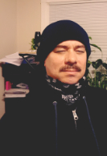
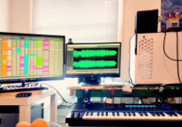

Battle Farm Galactica
(Latest Album)

TRACKLIST
- Pleiadesnuts
- The Zombie Blues
- Battle Farm Galactica
- Unicorn Zebra
- Airplanes Collide
- Black and Bloom
- Mr Stupid
Glitter Dimension
(In the works)

Tracklist not yet available
About
I'm Brekky Jose, an underground visual and musical artist, situated somewhere in the Pacific Northwest. In fact, I'm so underground that you probably never heard of me, but I swear I have at least one fan.

My musical journey began at a very young age, trying to figure out how to play Punk riffs on a beat-up old acoustic guitar that was sitting around in my parents junk room. I never learned how to play those punk riffs but came up with my own unique unestablished genres that I can only imagine my alternate-selves are listening to throughout various separate realities

My music is influenced by Hip Hop, Punk, Psychedelic, Metal, and EDM, all in their various forms. Lately the music I play is a combination of Folk, Country, Blues, Jazz, Classical, Trip Hop, New Age, and EDM. My guitar playing is usually an electric guitar played through an amp with an old classic-rock setting, driven to give my guitar a lightly distorted punk sound.
I sometimes busk with my guitar in public, and have even randomly showed up downtown DJing with an iPad. Becoming a successful artist is not my intention. I don't advertise nor do I ask people to buy my tracks on Bandcamp. Music and art is about manifesting what's in your soul, at least that's what it should be about.
Battle Farm Galactica is the first album I've released after years of experimenting with guitars, digital audio production, sampling, and music theory. Most of the backing tracks are made in Ableton Live or arranged on various grooveboxes or other MIDI devices.